CPU Components
| Sr. no. |
Components |
Image |
Description |
| 1 |
Cache Controller |
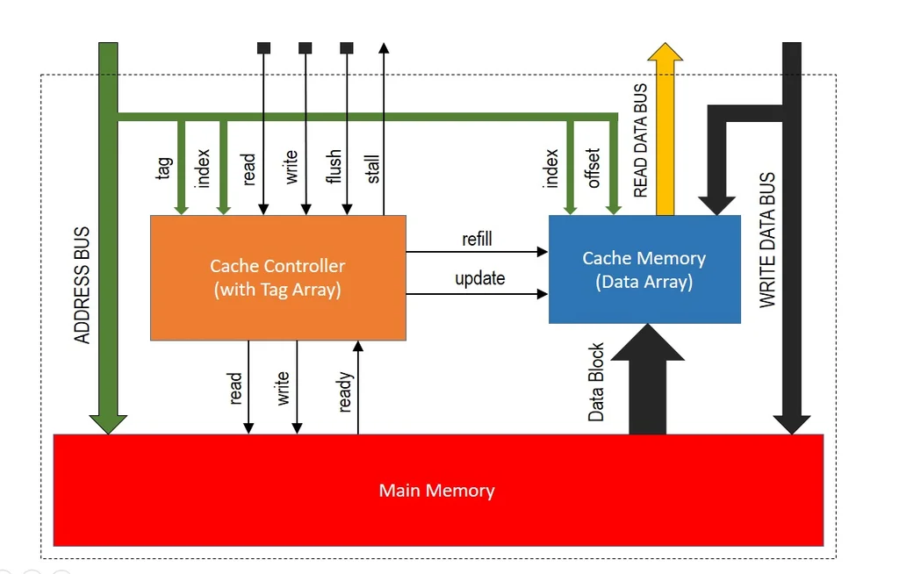
|
A hardware component that moves data and code between the main memory and cache memory. It helps to speed up
data access by the processor. It helps to improve the efficiency of data access by reducing the time it takes
for the processor to retrieve data.
|
| 2 |
ALU (Arithmetic Logic Unit) |
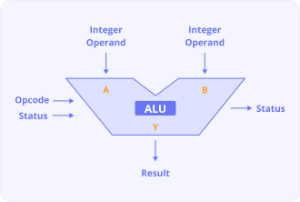
|
It's a digital circuit in a computer's CPU that performs arithmetic and logical operations. |
| 3 |
Registers |
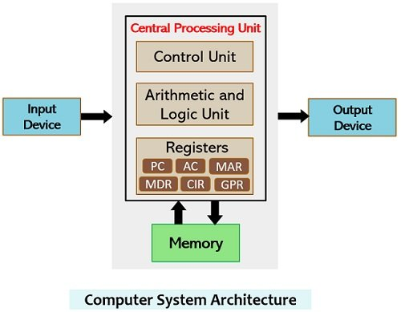
|
Small, high-speed storage areas in a computer's CPU that store data and instructions. They help the CPU work
faster and more efficiently.
|
| 4 |
Cache Memory |

|
A type of high-speed memory that stores frequently used data in a computer. It is used to speed up data access
and improve application performance.
|
| 5 |
Power Management Unit (PMU) |
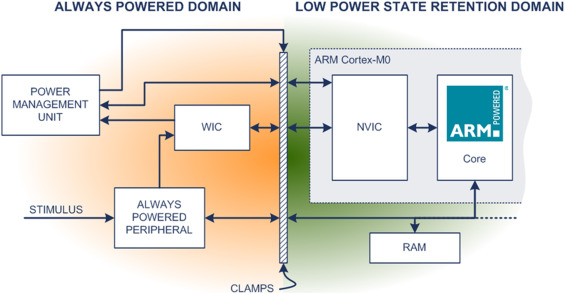
|
A microcontroller that governs power functions of digital platforms. This microchip has many similar components
to the average computer, including firmware and software, memory, a CPU, input/output functions, timers to
measure intervals of time, and analog to digital converters to measure the voltages of the main battery or power
source of the computer.
|
| 6 |
Clock |
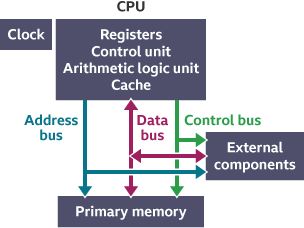
|
A clock is a mechanism that controls the timing of operations in a computer's central processing unit (CPU).
It's also known as a clock cycle, machine cycle, or clock tick.
|
| 7 |
Control Unit (CU) |
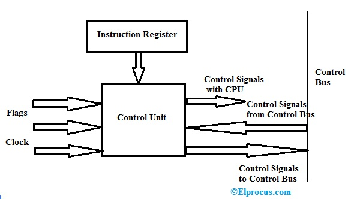
|
A hardware component of a computer's processor that directs the computer's operations. It's responsible for
controlling the flow of data and instructions within the processor.
|
| 8 |
Buses |
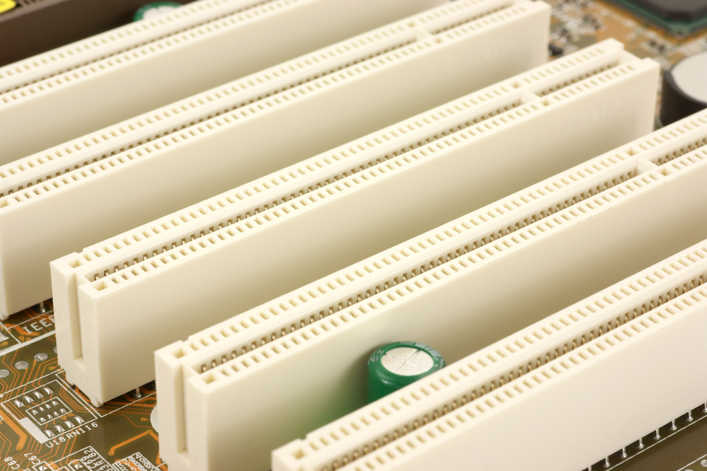
|
A bus is a communication system that moves data between components of a computer or network. It's made up of
hardware and software, including communication protocols.
|
| 9 |
Instruction Decoder |
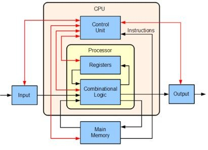
|
A circuit that interprets instructions and initiates the corresponding tasks. It's a part of a processor that's
responsible for translating instruction codes into addresses.
|
| 10 |
Branch Predictor |
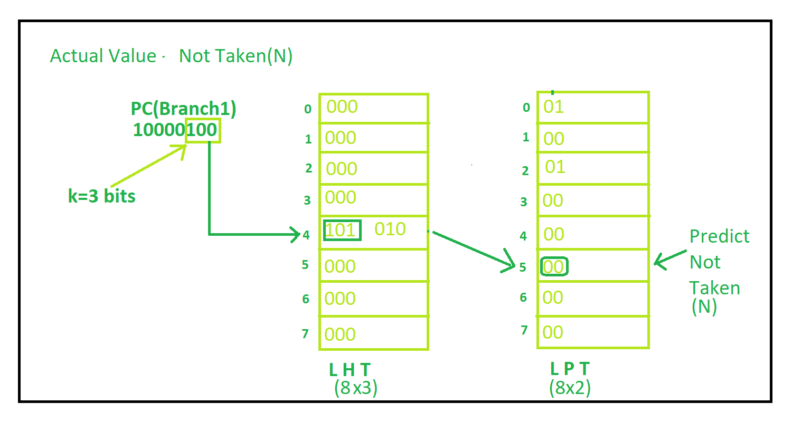
|
A hardware component that guesses the outcome of conditional instructions in a program. It's designed to improve
the efficiency of a processor by reducing delays and maximizing instruction throughput.
|
| 11 |
Execution Unit (EU) |
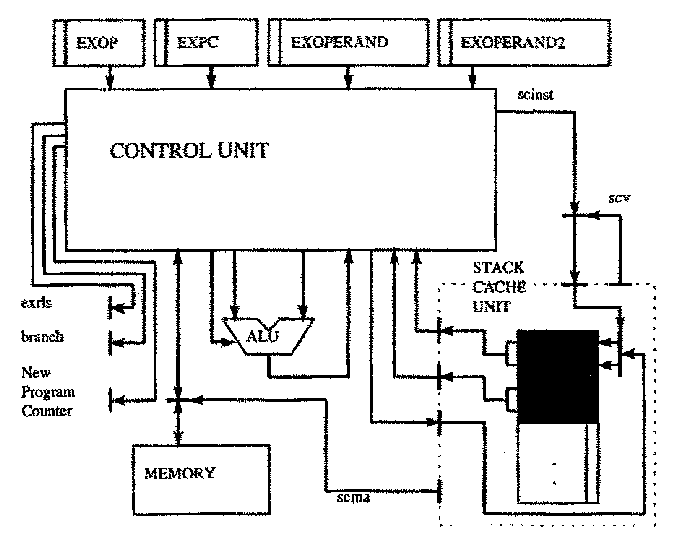
|
A part of a computer's processing unit that performs calculations and operations. It is a component of a CPU
that is separate from the CPU's main control unit.
|
| 12 |
Floating Point Unit (FPU) |
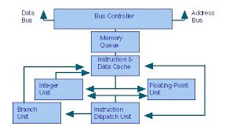
|
A hardware component in a computer that performs mathematical operations on floating-point numbers. It's also
known as a numeric processing unit or math coprocessor.
|
| 13 |
Translation Lookaside Buffer (TLB) |

|
A cache that stores recent translations of virtual memory to physical addresses. It's a part of the processor's
memory management unit (MMU).
|
| 14 |
Data Bus |
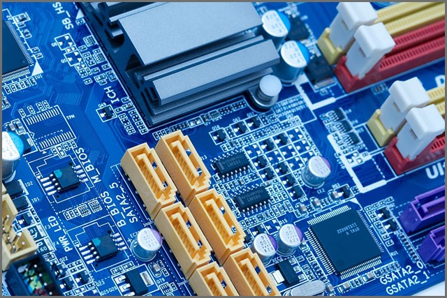
|
A system that allows data to be exchanged between different parts of a computer or between computers. It can
also refer to a software framework for managing data in distributed systems. |
| 15 |
Address Bus |
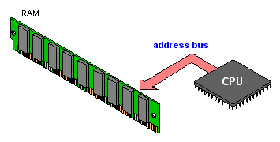
|
A computer component that sends addresses from the CPU to memory or other devices. It's unidirectional, meaning
data only flows from the CPU to the memory or device.
|